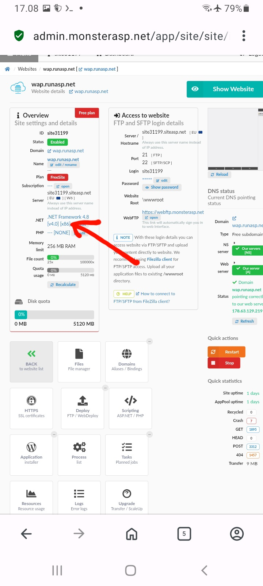

Deploy project to web hosting
Welcome bro web ini hasil dari coding rebahan dan tidak ada kegiatan jadi ini hasil dari kegabutan
oia buat yang baru terjun ke dotnet pasti aga kesusahan untuk deploy ke webhosting,
karna saya pernah merasakan nya,
bahkan untuk sekedar bisa jalan aja web dengan webapp tersimple,
sangat susah di praktekin nya. karna gak tau cara kerjanya.
setelah aku tau ternyata net core itu tidak seperti webform seperti net 4.8
dan ternyata kode c# tidak dapat di otak atik di server
menggunakan file manager atau ftp. bahkan kita tidak dapat mengubah
mengurangi logika/endpoint, karna fungsi kode c# sudah di pindah ke file.dll setelah di publish
dengan.... dotnet publish release -o ./publish . . .
yang bisa kita otak atik adalah javascript untuk mengakses endpoint yang sudah di tetap kan di program.cs
sebelum di publish, setelah di publish program.cs tidak di gunakan lagi ternyata,
karna sudah di pindah fungsi nya ke file.dll
untuk membuat/menentu kan endpoint atau logika di program.cs
kita harus punya net core karna file dengan akhiran .cs tidak di eksekusi di webhosting..
ok itu sedikit gambaran semoga penjelasan saya dapat sedikit menggambarkan dari dotnet webapp
walau penjelasan saya smerawut/acak acakan...
ini ada web app simpe yang saya buat file aslinya hanya 200kb
hanya ada gambar dan file2 gak jelas jadi isinya besar.
untuk endpoint yang telah di publish jadi web.dll skema/map nya
bisa sobat buka di program.cs.txt ingat ya program.cs.txt ini gambaran
kode yang akan di ekseskusi di webhosting di dalam file web.dll..
tidak ada pengaruh kita ubah program.cs.txt bahkan jika kita hapus itu tidak
berpengaruh itu hanya map untuk kita menyesuai kan kode javascript.
kode js yang kita gunakan untuk mengakses web.dll.
silahkan download disini web.zip
cara pasang di web hosting yang support net.core, misal webhosting gratis:
1 Monsterasp.net
daptar disana setelah login masuk ke dashboard,
{kind=link}
pilih website yang di daptarin tadi. contoh web saya wap.runasp.net
{kind=link}
setelah masuk ke pengaturan websit, contoh saya masuk ke website wap.runasp.net
{kind=link}
klik .NET untuk memilih net core, jika net nya udah di .Net core 10/9/8/7/6/5 skip aja. sampai sini
{kind=link}
Pilih di bagian .NET Version..
{kind=link}
Lalu centang input radio yang ada tulisan .NET 10/9/8/7/6/5/Core.
{kind=link}
Lalu klik save sampai muncul notifikasi berhasil/hijau...
{kind=link}
Untuk akses ftp..
{kind=link}
Klik show pasword lalu salin..
{kind=link}
Down lod X-Plore android cari di play store. buka bagian ftp. Klik tambahkan server. isi data sesuai data hosting tadi.. isi swmua data sesuai warna tanda panah.
{kind=link}
buka ftp di tab 1 x- plore....
{kind=link}
lalu pindah le tab 2 untuk membuka file web.zip lalu Copy/salin isi web.zip yang udah di download tadi , Ceklis semua file dan folder wwwroot. salin ke ftp server ke tab sebelah tadi..
{kind=link}
Kalo semua udah selesai... udah tinggal kunjungi alamat web sobat yang di daptarin tadi. untuk mengelola kontent template svg. bisa edit,rename,import via http/https,upload,hapus... bisa kunjungi [http://websobat.com/admin.html]. contoh: wap.runasp.net/admin.html
{kind=link}
ubah nama [admin.html] di folder wwwroot/admin.html..
sesuai keinginan sobat untuk mengamankan
akses dari orang yang tidak diingin kan..
nanti kalau mau keloka namafile harus diingat
http://alamatwebsobat.com/file-admin-yangdiubah.html .....
Untuk mengelola file di x-plore buka ftp.
buka folder wwwroot/disitu semua file yang bisa di modifikasi..
untuk skema endpoint nya ada di program.cs.txt
bisa juga di server gratisan Somee.com
catatan penting untuk somee.com tidak suport file statis. halaman akan blank,
gunakan somee untuk server aja dan file html bisa di pasang di github pages.